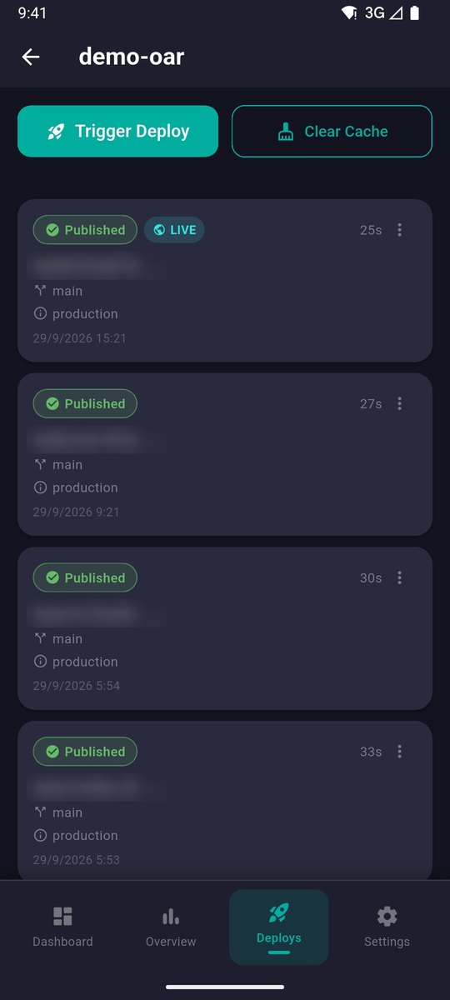
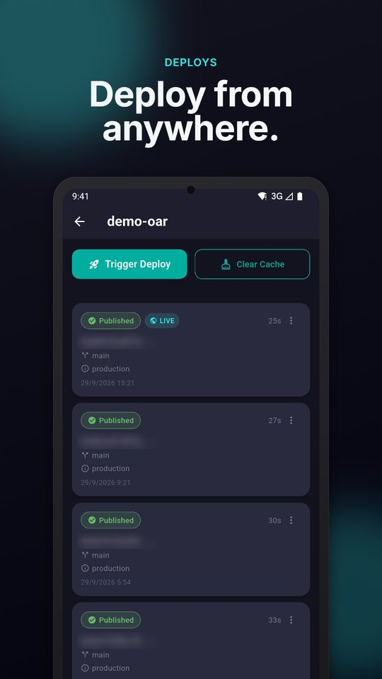
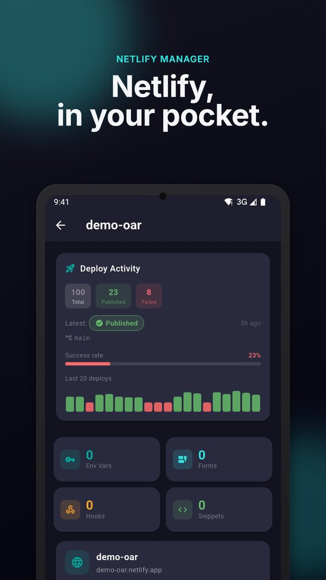
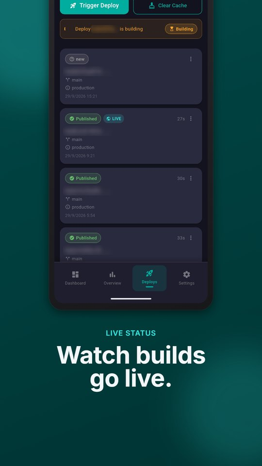
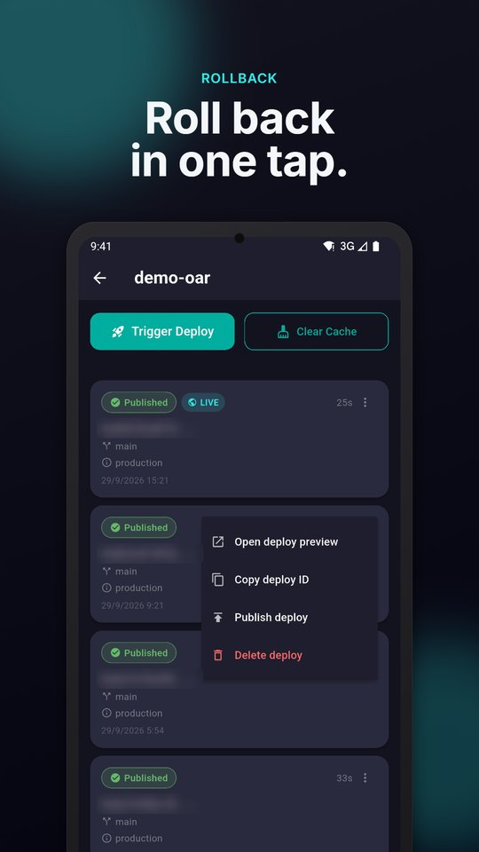
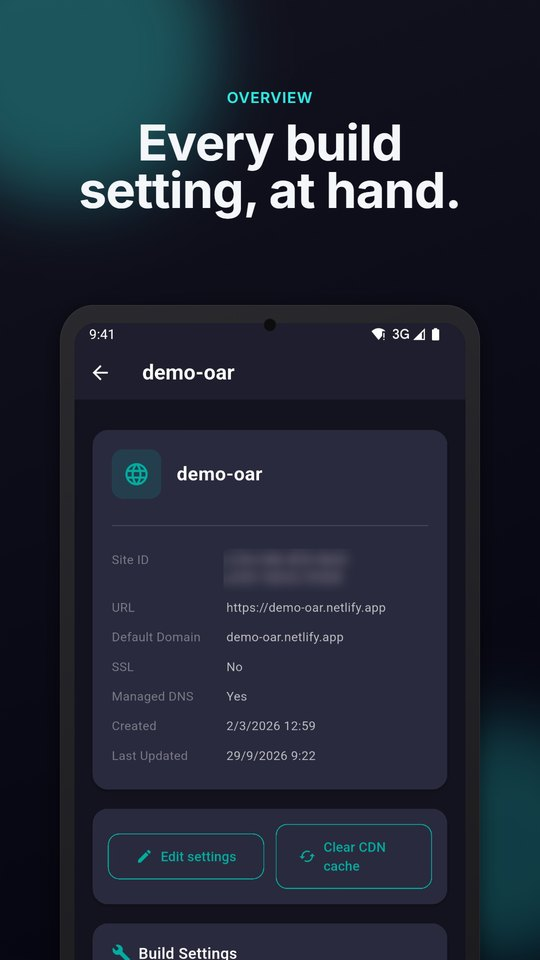
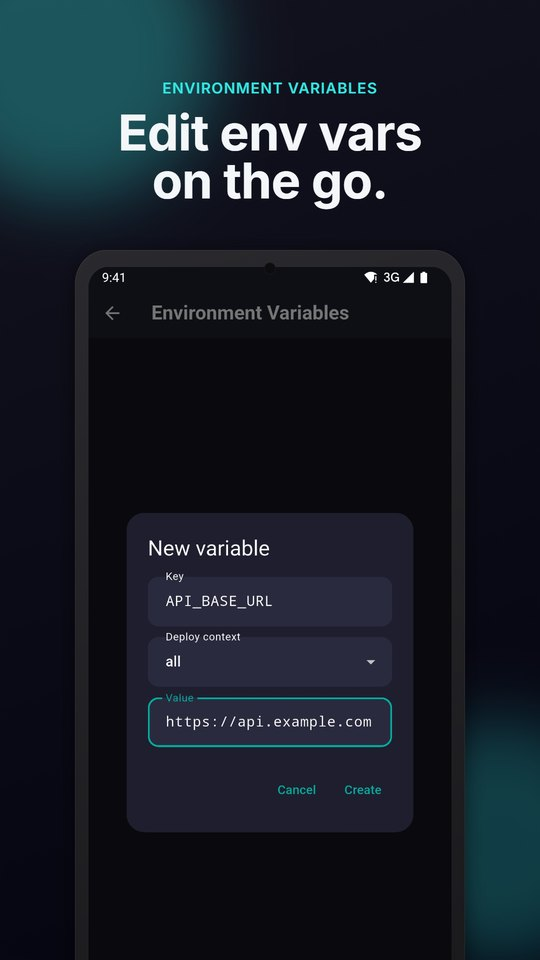
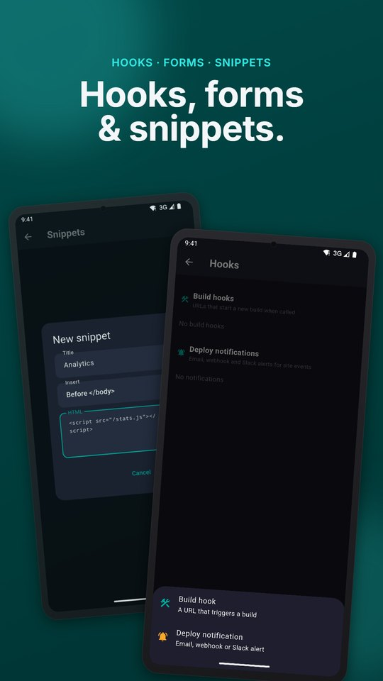
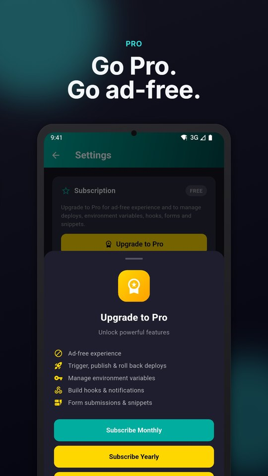

Manage Netlify sites from your phone.
Trigger a deploy, roll back a bad release or change an environment variable in a few taps. Netlify Manager connects straight to the Netlify API with your own Personal Access Token.
A third-party app by OraDevs. Not affiliated with Netlify, Inc.

What you can do
The parts of the Netlify dashboard you actually need when you are away from your desk.
Deploy from anywhere
Trigger a deploy, or clear the build cache and deploy, then watch the status update live.
Roll back in one tap
Publish any earlier deploy, cancel a running one, or lock auto publishing.
Environment variables
Add variables, set values per deploy context, copy and delete them.
Site overview
Domain, DNS, repository, branch, build command and publish directory, with editing and CDN cache clearing.
Hooks and notifications
Create build hooks and email, webhook or Slack deploy notifications.
Forms and snippets
Read Netlify Forms submissions and inject scripts into every page.
Your token stays yours
Stored encrypted on your device and sent only to api.netlify.com. No OraDevs server in between.
Rate-limit aware
See how much of your Netlify API quota is left, with a warning before it runs out.
Screenshots
Real screens from the app.








Get started
Three steps, about a minute.
- Install Netlify Manager from Google Play.
- In Netlify, open User settings → Applications → Personal access tokens (
app.netlify.com/user/applications#personal-access-tokens) and create a token. - Paste the token into the app and tap Connect to Netlify. Or tap Demo Login to look around first.
FAQ
Is Netlify Manager the official Netlify app?
No. It is an independent, third-party client built on the public Netlify API, and is not affiliated with Netlify, Inc.
Where is my Netlify token stored?
Only on your device, in encrypted storage. It is sent only to Netlify's API. You can remove it with Logout and revoke it from your Netlify account.
Can I roll back a Netlify deploy from my phone?
Yes. Open the Deploys tab, open the menu on an earlier deploy and choose Publish deploy. This is a Pro feature.
Is Netlify Manager free?
Browsing sites, deploy history and site details is free with ads. Pro removes ads and unlocks deploy actions, environment variables, hooks, forms and snippets.
How do I report a bug or ask for a feature?
Open an issue on GitHub. Please do not paste tokens, hook URLs or variable values.